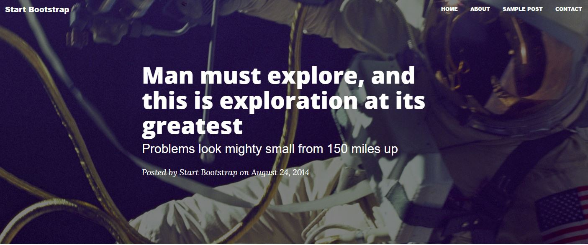

Marcus
PROGRAMMER ANALYST
Marcus is a programmer analyst with a love for databases, data analysis, web development, automation, and video game development. When not at work, he's often working on personal projects.
Code Snippets
Temperature Conversion
This ruby program will prompt the user for a temperature
in degrees Celsius and let the user know what the
corresponding temperature is in Fahrenheit.
puts "Degrees in celsius: "
celsius = gets.chomp.to_f
#Method converting celsius input to fahrenheit.
def celsius_to_fahrenheit(celsius)
fahrenheit = celsius * 1.8 + 32
return fahrenheit
end
#Output to console.
puts "#{celsius} degrees celsius is equal to #{celsius_to_fahrenheit(celsius)} fahrenheit."
puts "Enter a number: "
number = gets.to_i
number_ordinal = number % 10
#lop off right most digit and store in a value
if number % 100 >= 11 && number % 100 <=13
puts "That's the #{number}th item!"
elsif number_ordinal == 1
puts "That's the #{number}st item!"
elsif number_ordinal == 2
puts "That's the #{number}nd item!"
elsif number_ordinal == 3
puts "That's the #{number}rd item!"
else
puts "That's the #{number}th item!"
end
Ordinal Challenge
This ruby program will convert a plain number
to the ordinal of the number. So for example,
if the user enters 2, it will display 2nd, if
the user enters 3, it will display 3rd, etc.
Foobar
This ruby program is an adaptation of a classic technical
interview problem which displays sequences
of the Foobar pattern.
puts "How many items do you want to see?"
itemNumber = gets.to_i #Integer conversion of user input.
i = 1
#While loop from i = 1 to itemNumber.
while i <= itemNumber do
if i % 15 == 0 #If i divisible by 15...
puts "Foobar"
elsif i % 5 == 0 #Else, If i divisble by 5...
puts "Bar"
elsif i % 3 == 0 #Else, If i divisible by 3...
puts "Foo"
else #Else, just put i.
puts i
end
i += 1
end
Web Apps
Replicate a Webpage

The goal was to completely replicate from scratch a single-page
website using HTML, CSS, and Boostrap. Page includes Bootstrap navigation bar, custom fonts, images between paragraphs, quote content, and a footer bar.
Subscription-Based Website

This website offers a free and paid subscription option.
All logged on users see a different home page, and subscribed users receive additional information when viewing other profiles. Pro account creation is tied to (Test) Stripe. Contact form sends email to admin. Deployed on Heroku.
Marcus has developed proficiency in the following programming languages and is comfortable with using the following tools.